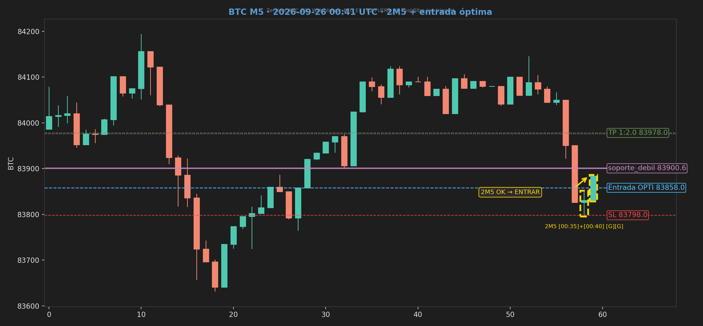

| Precio | 86347.9 |
|---|---|
| Veredicto | Entrar (SHORT) |
| Entrada óptima | 86082.6 |
| ICT | 86236.6→86082.6 · Refinada 86236.6→86082.6 (FVG BEARISH edge) · Sweep swing_high @ 86192.8 + reclaim · PD PREMIUM · H1 COMPLETED_BULL · killzone NY AM 08-10 |
| Plan | Entry 86082.6 · SL 86228.4 · TP 85790.9 |
| E2 / Break | REVERSE / E2 — Sin reversión E2 — E1 primario |
| Métricas | Rules 83% · Neural 65% · ML 17.1% · Confluencia BAJA — 33% · Rules 83%; Neural gated 60% (medium); ML 17% veto suave; 2M5 no listo; E2 no operable |
| Historial ref | btc-060 · 2026-10-05 09:41 NY · Entry 85898.5 · REGULAR — cerca suave de Entry actual; sin 2M5; zona OK · (MÁS CERCA) · Δ Entry +184.1 pts (+0.214%) · precio→última 449.4 pts (0.523%) · precio→actual 265.3 pts (0.308%) |
| Bando usado (lado asumido) | BEARISH |
| Bando mercado (H1) | BULLISH |
| R:R | 1:2 |
| Dist. a Entry | -265.3 pts (0.307%) |
| Dist. a SL | -119.5 pts (0.138%) |
| Dist. a TP | -557.0 pts (0.645%) |
| Riesgo (pts) | 145.8 |
| Winrate setup | ~51% — histórico E2 reversión BTC · SHORT en PREMIUM +4 (E2 a favor); H1 BULLISH vs SHORT -6; acuerdo BAJA -8; patron WIN similar +3; 83% reglas |
| Zona PD vs dirección | SHORT en PREMIUM +4 (E2 a favor) |
| Bias vs dirección | H1 BULLISH vs SHORT -6 |
| Score Rules extendido | 80% |
| Estado 2M5 | Sin 2M5 (info, no gate) |
| Bias H1 vs bando | H1 BULLISH · CLI BEARISH |
| Calidad break/reverse | REVERSE watch (E2_NO) |
| Neural grade/conf | B · conf. medium · 65% WIN |
| Rules E1 detalle | 5/6 (83%) |
| Vol Zentinel (filtro) | muy_bajo · 0.35× · Zentinel_BTC_E1 |
| MACD-quant (filtro) | en contra · Hist 113.9 · never trigger |
| Watchtower KZ | NY AM 08-10 · Watchtower_BTC_E1 |
| Chart | Preview en navegador |
